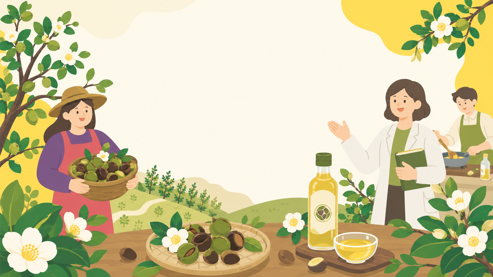

← 文章總覽
認識國產油茶
認識油茶
從一棵樹到一瓶油，先看懂台灣國產油茶的基礎樣貌。
3 篇文章

認識油茶 · 基礎認識
台灣國產油茶是什麼？
台灣國產油茶是什麼？ 從一棵樹開始認識茶油台灣人熟悉的「苦茶油」，多半來自油茶樹的種籽。油茶不是一般採嫩葉製茶的茶樹，而是山茶屬植物中以採收果實、取得種籽並榨油…
閱讀文章 →
認識油茶 · 大果小果
大果油茶與小果油茶有什麼不同？
大果油茶與小果油茶有什麼不同？ 先釐清比較對象大果油茶與小果油茶都可作為苦茶油原料，但它們不是同一種栽培型態。大果油茶果實較大，常見於中南部與東部較溫暖地區；小…
閱讀文章 →
認識油茶 · 產業流程
從油茶到茶油：一瓶國產茶油怎麼來？
從油茶到茶油：一瓶國產茶油怎麼來？ 一瓶油從田間開始茶油不是榨油當天才開始形成。一瓶國產茶油的品質，從田區選擇、種苗來源、肥培管理、草生管理、修剪、病蟲害管理與…
閱讀文章 →
回到文章總覽
看更多「認識國產油茶」分類